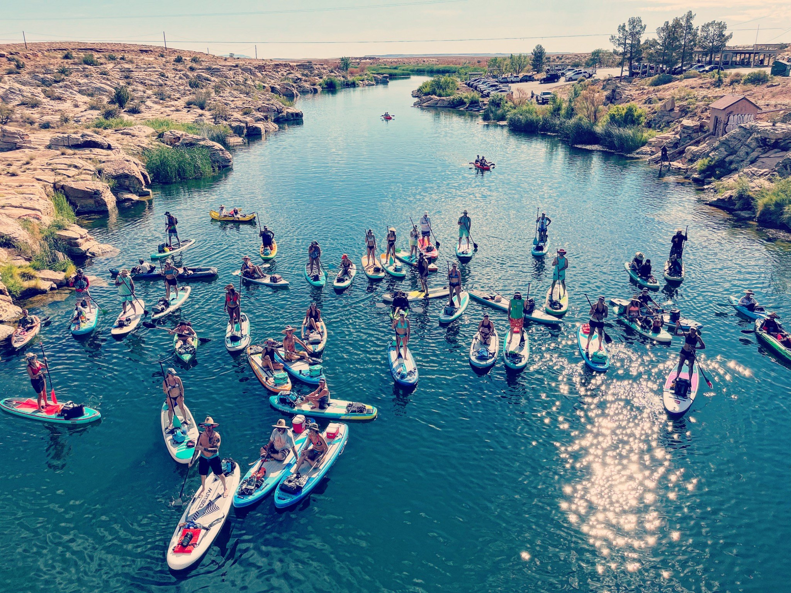
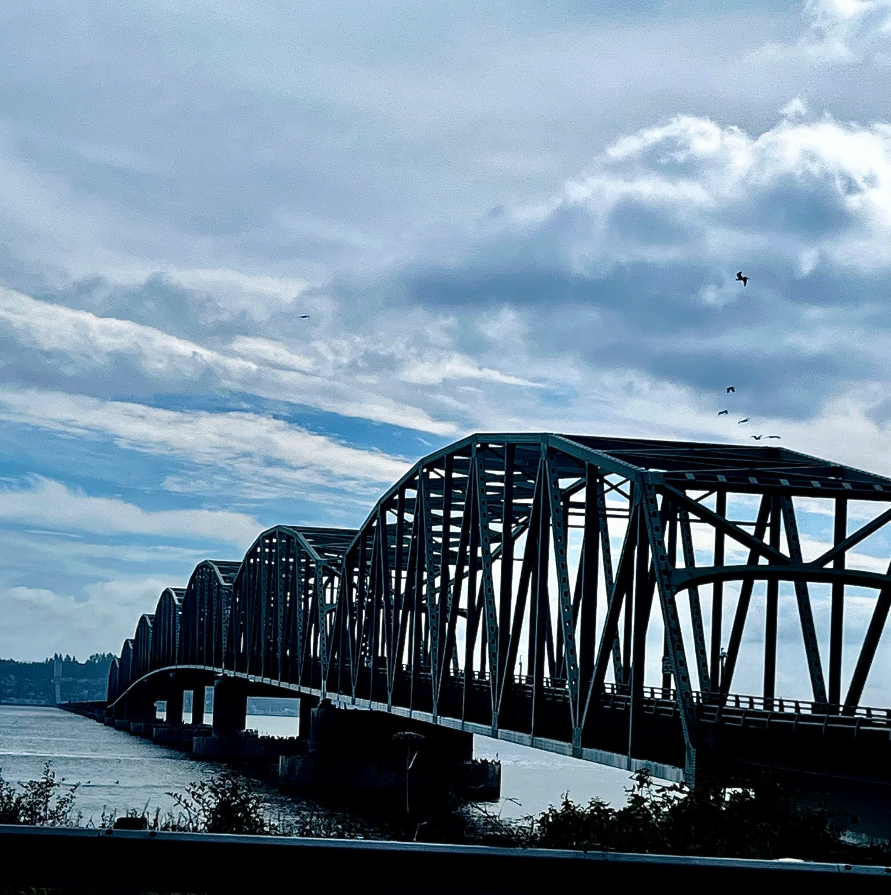
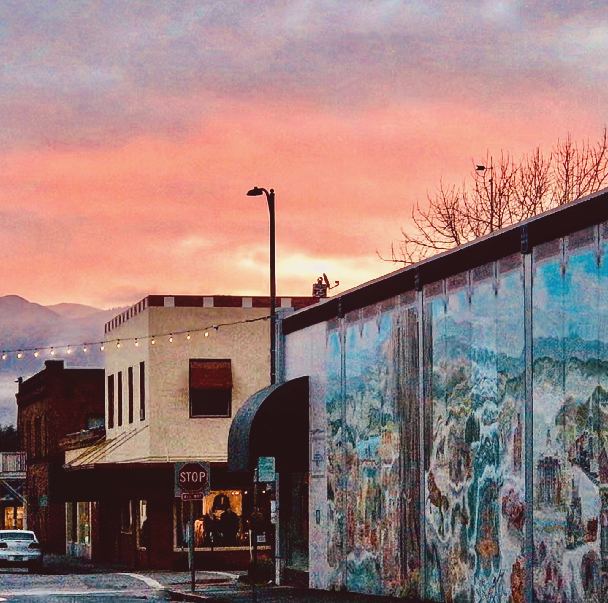
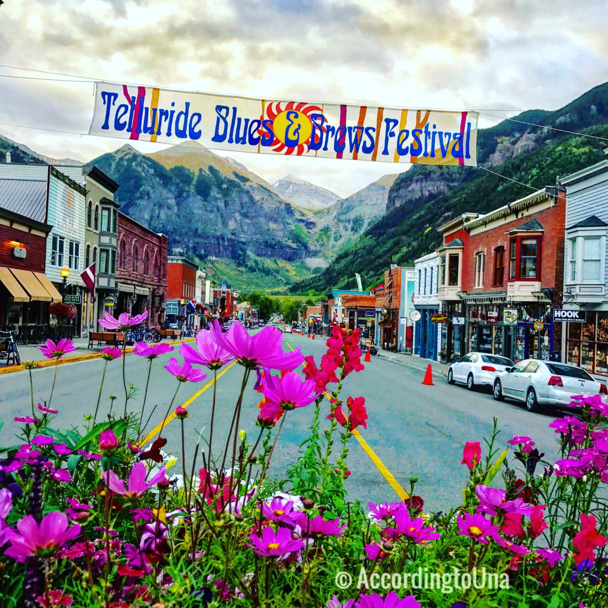
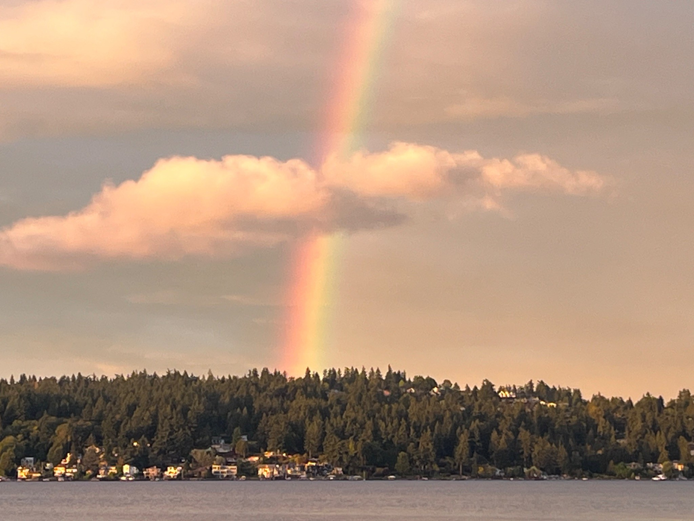
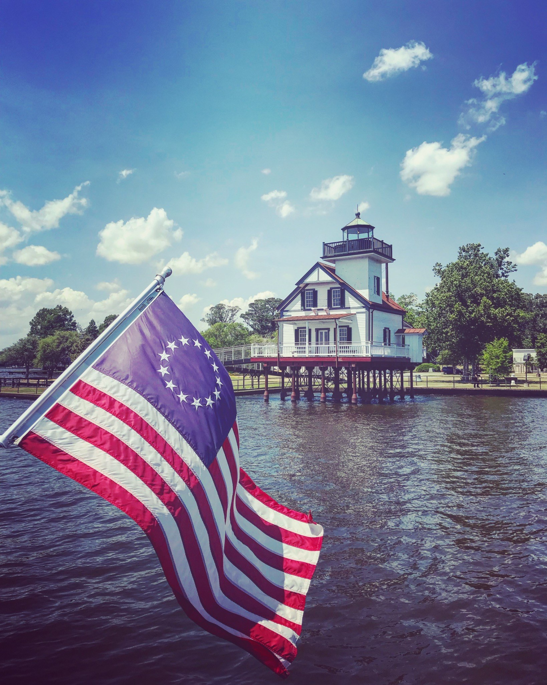
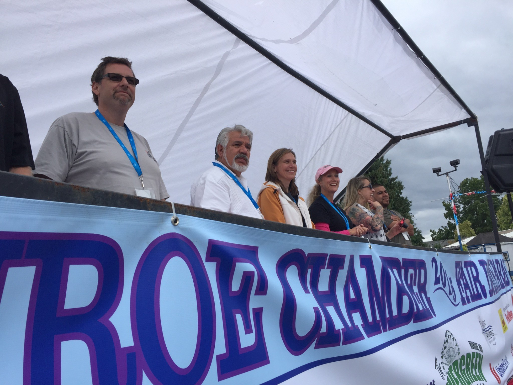

Strategic Planning
Clear, actionable roadmaps that connect vision, governance, funding, accountability, and implementation.
Every place has a story.
The next chapter begins with listening.
Wirkebau Consulting partners with communities, Tribal Nations, public agencies, healthcare organizations, nonprofits, and private-sector leaders to transform complex challenges into trusted partnerships, practical strategies, and measurable results.
From ideas to implementation
For more than 30 years, Una Wirkebau has helped public agencies, nonprofits, healthcare organizations, businesses, and regional coalitions move from competing priorities to shared action.
The work is grounded in careful listening, clear strategy, resource development, and implementation that respects the character of each place.
What Wirkebau does
Engagements are tailored to the place, the people, and the outcome—not forced into a standard template.
Clear, actionable roadmaps that connect vision, governance, funding, accountability, and implementation.
Place-based strategies for business growth, downtown vitality, infrastructure, resilience, and investment readiness.
Regional coordination, delivery models, financing concepts, employer partnerships, and practical pathways to expand access.
Partnership structures that align governments, Tribal Nations, institutions, employers, philanthropy, and community organizations.
Facilitation and listening processes that surface local knowledge, build trust, and convert diverse perspectives into shared priorities.
Destination strategy, visitor economy planning, local business development, storytelling, and community-centered revitalization.
“The strongest strategies are not written for communities. They are built with them.”
Una WirkebauSelected communities




How the work moves
Begin with local knowledge, lived experience, existing work, and the realities behind the data.
Create the relationships, shared language, and decision structure needed to move together.
Translate priorities into a practical roadmap with roles, resources, funding, and milestones.
Support implementation, remove barriers, adjust to new information, and keep momentum visible.
About Una
Una Wirkebau is an executive leader and regional strategist with more than 30 years of experience translating complex community priorities into funded, implementable initiatives.
Her work spans housing, workforce, tourism, infrastructure, economic development, organizational change, and public-private partnerships across the western United States and internationally.
Una combines public-sector leadership, entrepreneurship, facilitation, and hands-on delivery. She is known for listening carefully, connecting unlikely partners, and turning broad ambitions into measurable next steps.



What story is your community ready to write next?
Wirkebau Consulting works with communities, public agencies, Tribal Nations, nonprofits, institutions, and businesses that are ready to move from ideas to action.